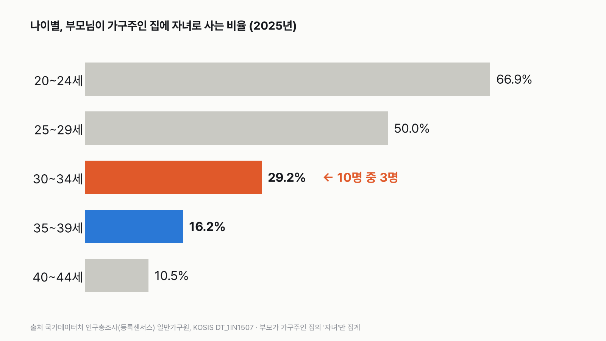
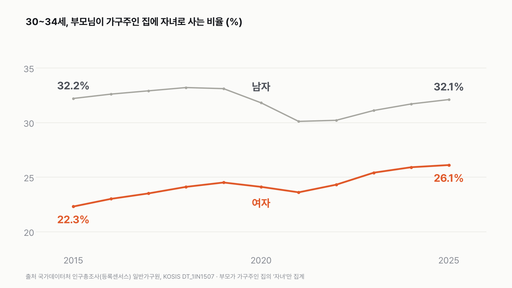

30대 초반 10명 중 3명, 부모님 집에 살아요
30대 초반 친구 10명을 떠올리면, 그중 3명은 부모님 집에서 사는 게 통계로 본 보통 모습이에요.

3줄 요약
- 2025년 30~34세 29.2%가 부모님이 가구주인 집에 자녀로 살아요. 10명 중 3명이에요. 35~39세는 16.2%예요.
- 사람 수로는 30~34세 99.4만 명, 35~39세 49.4만 명, 30대를 합하면 148.8만 명이에요.
- 30~34세 여자는 2015년 22.3%에서 2025년 26.1%로 늘었어요. 남자는 32.2%에서 32.1%로 거의 같아요.
| 나이(2025년) | 부모님이 가구주인 집의 자녀 | 비율 |
|---|---|---|
| 20~24세 | 133.1만 명 | 66.9% |
| 25~29세 | 154.5만 명 | 50.0% |
| 30~34세 | 99.4만 명 | 29.2% |
| 35~39세 | 49.4만 명 | 16.2% |
| 40~44세 | 37.8만 명 | 10.5% |
30대 초반은 10명 중 3명, 후반은 6명 중 1명
30~34세는 29.2%로 10명 중 3명이에요. 35~39세는 16.2%라 6명 중 1명 정도예요.
20대 후반(50.0%)에서 30대 초반(29.2%)으로 넘어가며 비율이 크게 줄어요. 30대 후반에서 40대 초반으로는 16.2%에서 10.5%로 덜 줄어요.
30~34세, 10년 새 27.3% → 29.2%
30~34세 비율은 2015년 27.3%, 2020년 28.1%, 2025년 29.2%예요. 해마다 오르기만 한 건 아니에요. 2021년에 27.0%로 내려갔다가 다시 올랐어요.

늘어난 쪽은 여자
| 30~34세 | 2015년 | 2025년 |
|---|---|---|
| 남자 | 32.2% | 32.1% |
| 여자 | 22.3% | 26.1% |
30~34세 여자는 10년 새 3.8%포인트 늘었어요. 남자는 2021년 30.1%까지 내려갔다가 다시 올라, 2025년 값이 2015년과 거의 같아요.
남녀 차이는 2015년 9.9%포인트에서 2025년 6.0%포인트로 줄었어요. 그래도 여전히 남자가 더 높아요.
다른 조사로 맞춰 봤어요
국무조정실 「청년의 삶 실태조사」 2024년에서 30~34세 가운데 부모와 함께 산다는 답은 29.9%였어요. 세는 방법이 다른데도 10명 중 3명이라는 점은 같아요.
숫자를 다시 보며
이 숫자는 '누가 가구주인가'로 셌어요. 부모님과 함께 살아도 30대 본인이 가구주면 빠져요. 그래서 실제로 부모님과 같은 집에 사는 30대는 이보다 많을 수 있어요. 여러분 주변 30대 초반 10명 중에는 몇 명인가요?
이 숫자는 어디서 왔나요
출처
기준일 인구총조사는 2025년 11월 1일 기준이에요(2026년 공표분). 2026년 11월 17일에 받았어요.
| 데이터 | 출처 | 쓰임 |
|---|---|---|
| 인구총조사 2015~2025 | 국가데이터처, KOSIS DT_1IN1507 | 나이·성별 '자녀'인 일반가구원 수와 비율 |
| 청년의 삶 실태조사 2022·2024 | 국무조정실 | 30~34세 부모와 함께 사는 비율(교차 확인) |
어떻게 셌나요
- 자료: 국가데이터처 인구총조사(등록센서스), KOSIS DT_1IN1507 '성, 연령 및 가구주와의 관계별 인구'. 2025년 11월 1일 기준 일반가구원이에요.
- 부모님 집의 자녀: 가구주와의 관계가 '자녀'인 사람이에요. 부모님 중 한 분이 가구주인 집에 사는 경우예요.
- 빠지는 사람: 30대 본인이 가구주이거나 배우자인 집에서 부모님을 모시고 사는 경우, 기숙사·시설 같은 집단가구에 사는 사람.
- 비율: 그 나이 일반가구원 가운데 '자녀'인 사람의 비율이에요.
- 결혼 여부: 나누지 않았어요. 미혼·기혼이 함께 들어 있어요.
- 청년의 삶 실태조사: 국무조정실 표본조사로, 본인 답으로 부모와 함께 사는지를 물어요. 가구주 기준이 아니라서 세는 방법이 달라요.
한계 4가지
이 데이터로 말할 수 없는 것
- 부모님이 가구주인 집의 '자녀'만 셌어요. 30대가 가구주이고 부모님을 모시고 사는 경우는 빠져요.
- 등록센서스라 주민등록·행정자료 기준이에요. 서류상 주소와 실제 사는 곳이 다른 사람이 있을 수 있어요.
- 결혼 여부, 일하는지, 왜 함께 사는지는 이 자료로 알 수 없어요.
- 해마다 30대 인구가 달라서, 사람 수와 비율이 같은 방향으로 움직이지 않을 수 있어요.
새 글 나오면 받아 보기
피드 리더 앱에 이 사이트 주소를 한 번 넣어 두면, 새 글이 올라올 때 앱에 떠요. 가입이나 메일 주소는 필요 없어요.
받는 법 보기
- 피드 리더 앱을 하나 골라요. 새 글을 모아 보여 주는 앱이에요. 예를 들면 Feedly나 Inoreader가 있어요. 둘 다 무료고 웹·휴대폰에서 써요.
- 앱에서 '구독 추가'(+)를 누르고 아래 주소를 붙여 넣어요.
- 끝이에요. 새 글이 올라오면 앱 목록에 떠요.
https://protofu.github.io/opendata-insight/feed.xmlFeedly를 쓴다면 여기를 눌러 바로 추가할 수도 있어요.